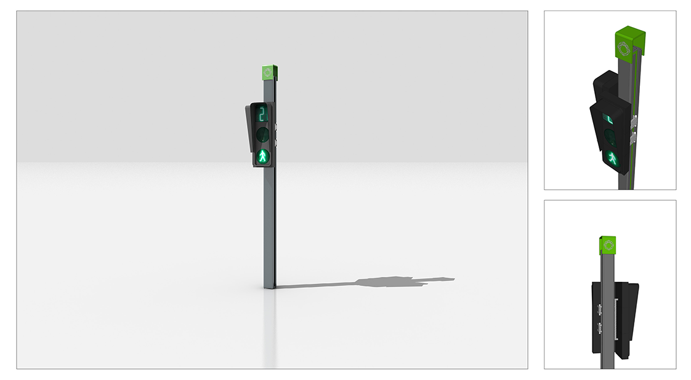

高铁新城市政形象提升
HSR New Town image promotion
苏州市高铁新城
项目面积：28平方公里
设计时间：2013年
苏州高铁新城作为苏州市中心城市“一核四城”战略板块 之一，是承接苏州南北东西的 交通枢纽和关键节点，是推进 相城后发崛起的重要引擎。核心区28.9平方千米，东起聚金 路、西至元和塘、南起太阳路、北至渭泾塘。坚持“国际化、 现代化、信息化”总体 要求，以“高铁枢纽、创智枢纽”为产 业引擎，全力推进“苏州新门户、城市新家园、 产业新高 地、生态新空间”建设。
